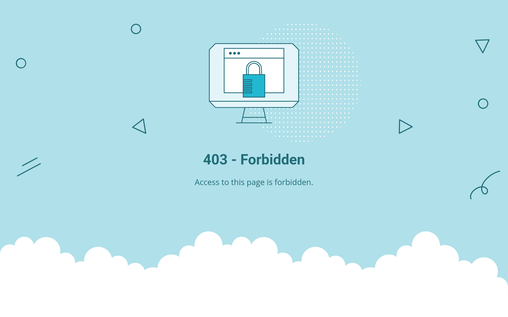
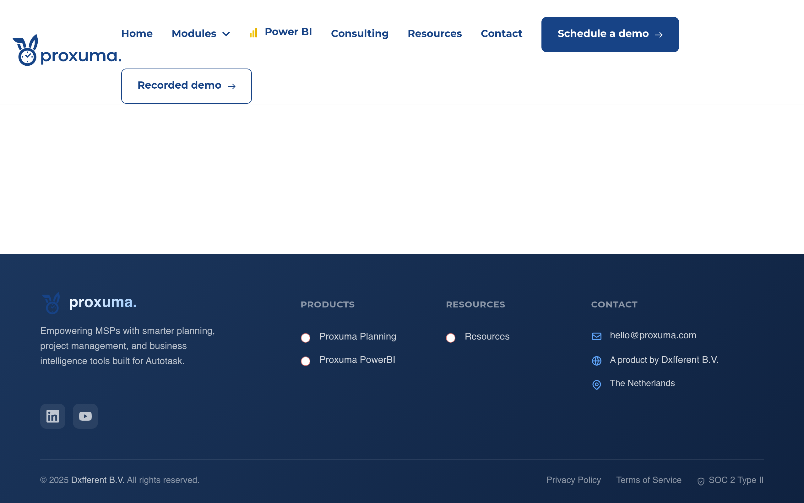
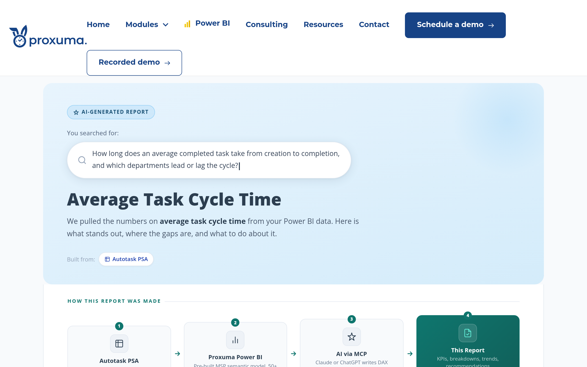
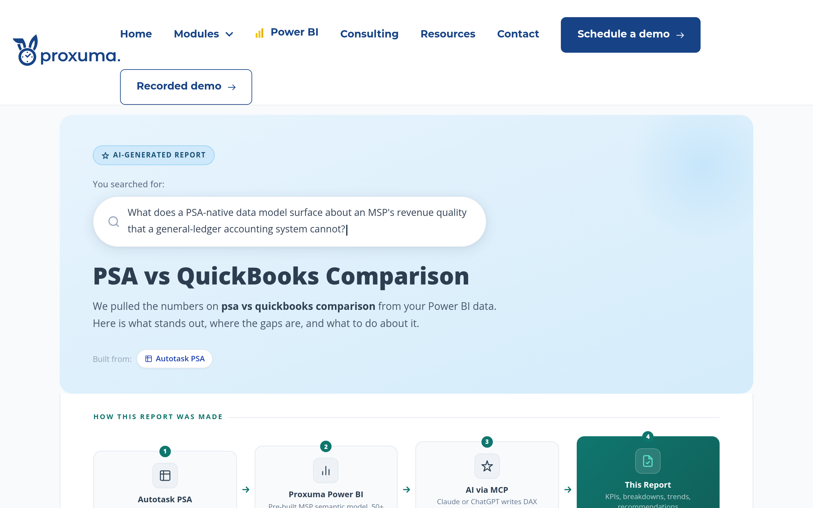
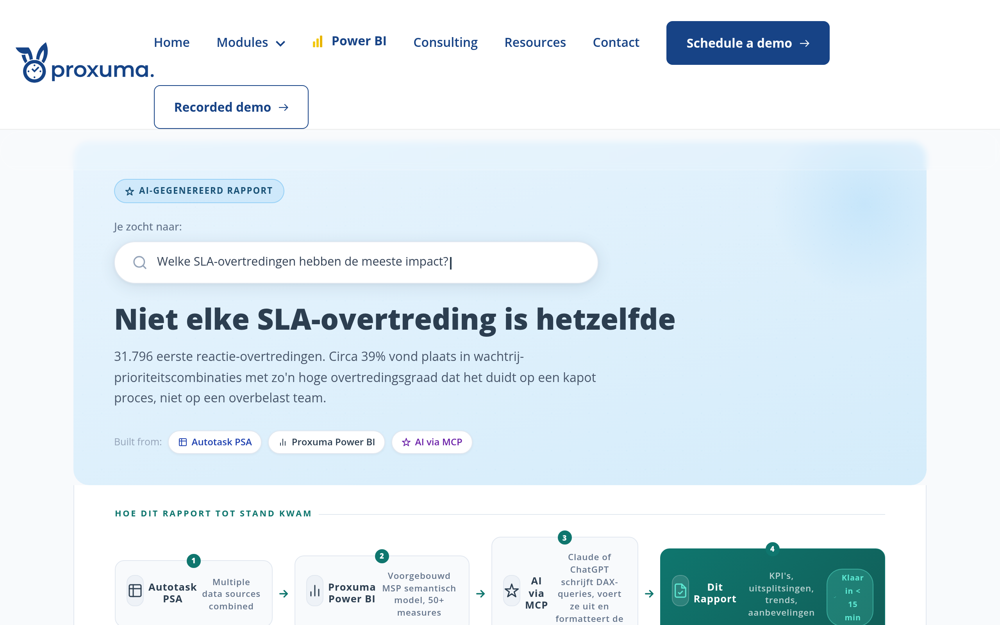
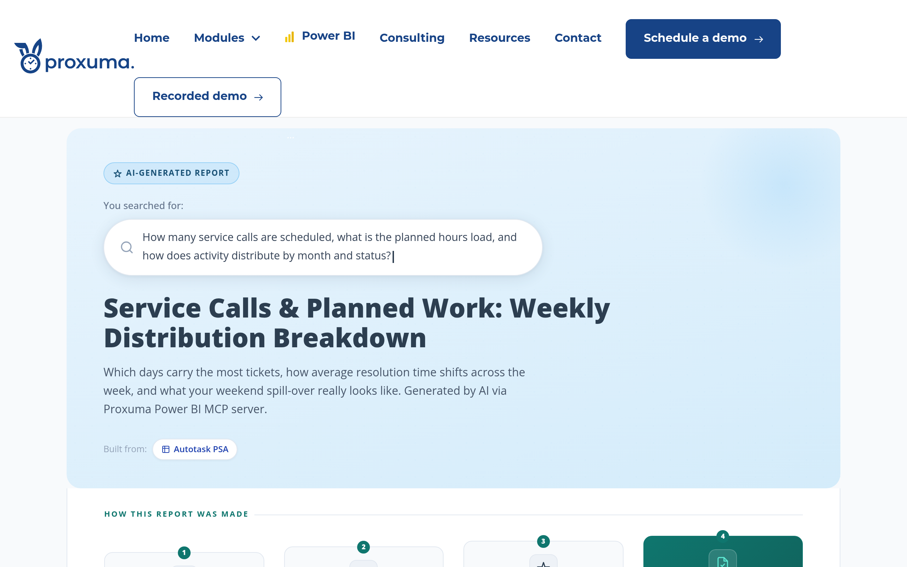
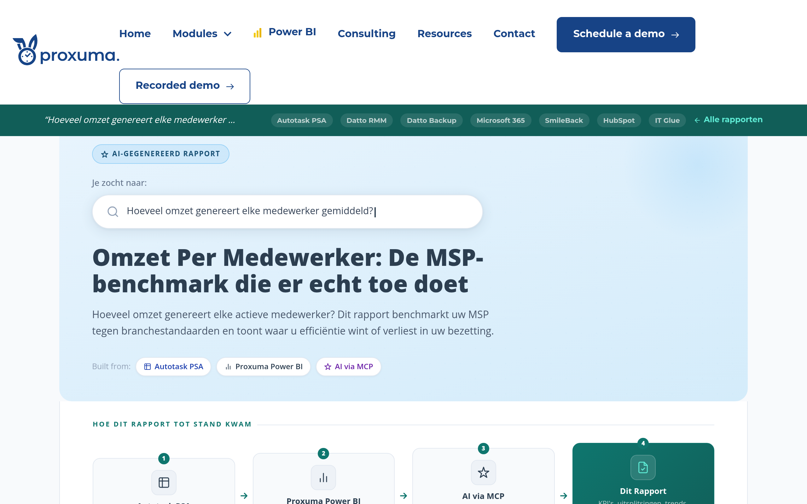
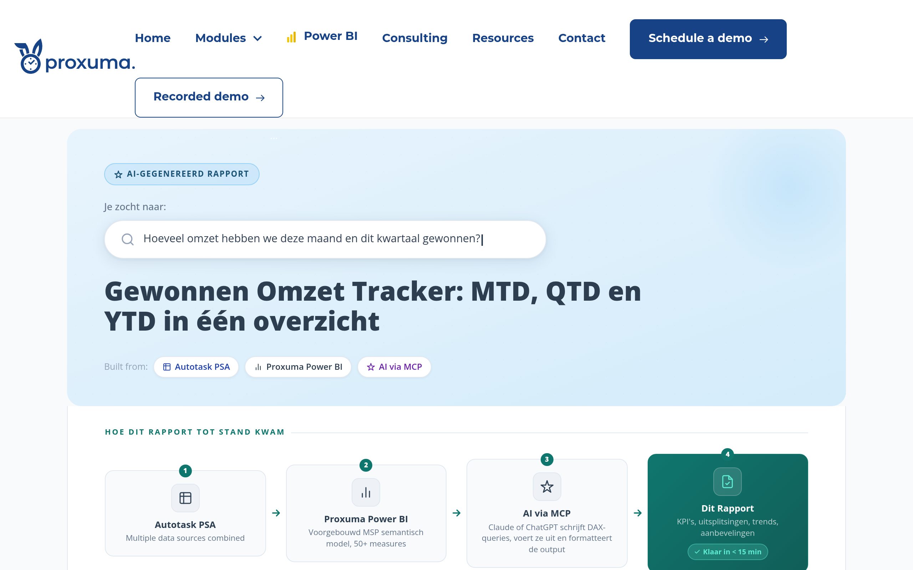
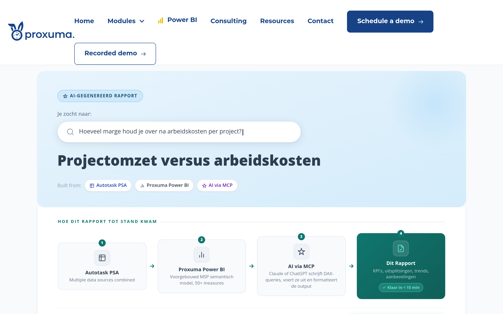

Proxuma Power BI Reports to proxuma.io WordPress - 2026-04-20
kosten-van-servicelevering-per-klant (post 5937): Missing _wp_page_template meta. Was rendering through default WP theme instead of page-fullhtml.php. Fixed during rollout. Potential issue for other newly-created pages in the corpus that were added post-Phase 8.
welke-sla-overtredingen-hadden-voorkomen-kunnen-worden (post 5815): Initial morph-bar check returned 0 due to SG cache lag. Re-check 30s later showed 42 hits. Not a real issue, just timing.
| # | Slug | Lang | Post ID | Bytes | HTTP | Morph | Status | Note |
|---|---|---|---|---|---|---|---|---|
| 1 | project-budget-variance | EN | 3976 | 96,008 | 200 | 32 | PASS | USERELATIONSHIP fix |
| 2 | project-budgetafwijking-rapport | NL | 4063 | 102,924 | 200 | 32 | PASS | USERELATIONSHIP fix, NL |
| 3 | kosten-van-servicelevering-per-klant | NL | 5937 | 98,897 | 200 | 33 | PASS | template fix applied |
| 4 | average-task-cycle-time | EN | 4162 | 81,991 | 200 | 32 | PASS | |
| 5 | psa-vs-quickbooks-comparison | EN | 3978 | 82,012 | 200 | 32 | PASS | |
| 6 | welke-sla-overtredingen-hadden-voorkomen-kunnen-worden | NL | 5815 | 128,312 | 200 | 42 | PASS | cache lag on first check |
| 7 | service-calls-planned-work-weekly | EN | 3989 | 89,586 | 200 | 32 | PASS | |
| 8 | omzet-per-medewerker-2 | NL | 5972 | 90,444 | 200 | 33 | PASS | |
| 9 | hoeveel-omzet-gewonnen-deze-maand-kwartaal-jaar | NL | 5893 | 88,646 | 200 | 33 | PASS | |
| 10 | projectomzet-versus-arbeidskosten | NL | 5974 | 83,961 | 200 | 34 | PASS |
Captured immediately after push and cache purge. Click slug links above to view live pages.









Before Phase B (next 50), check all remaining pages for missing _wp_page_template meta. The kosten-van-servicelevering-per-klant anomaly suggests recently-created pages may lack this. A bulk query on SG can identify all affected pages in one pass.
Also note: the SSH key is ~/.ssh/siteground_proxuma, not ~/.ssh/id_ed25519.